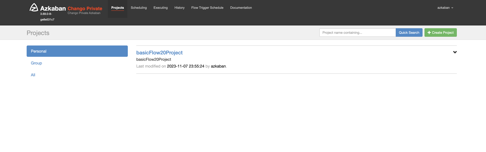
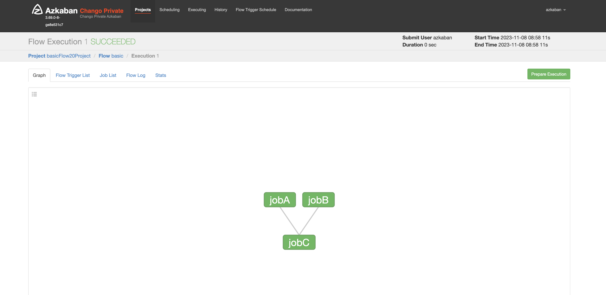
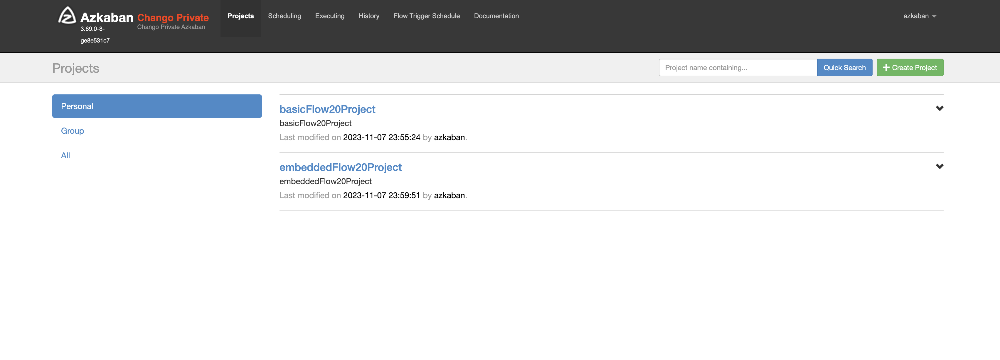
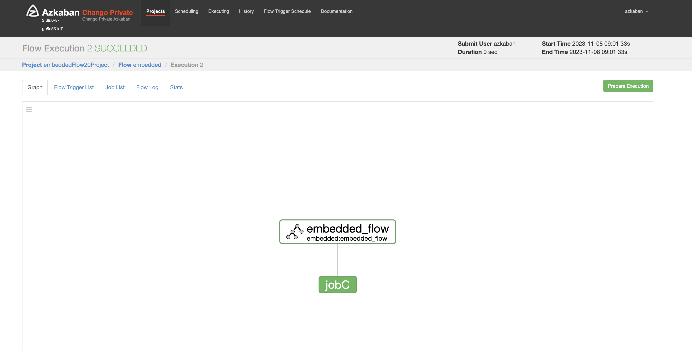
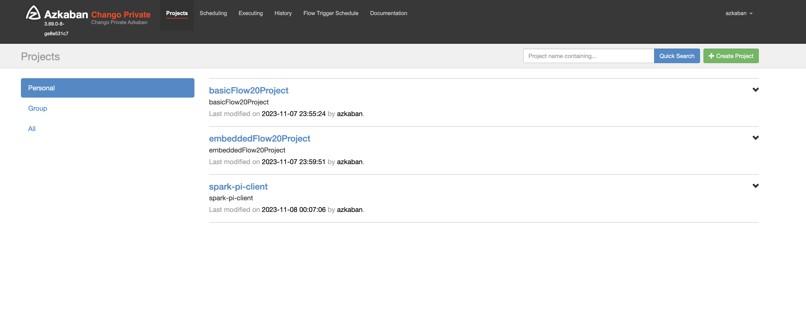
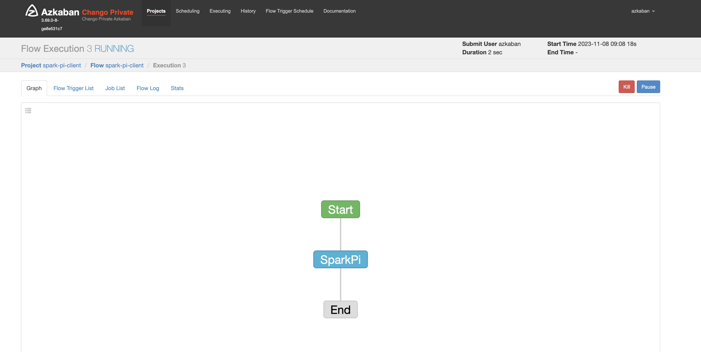
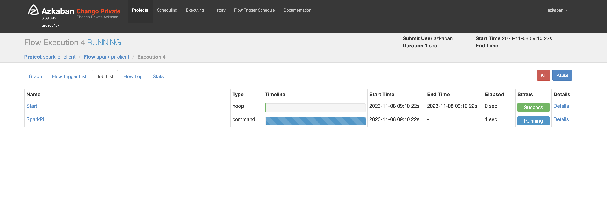
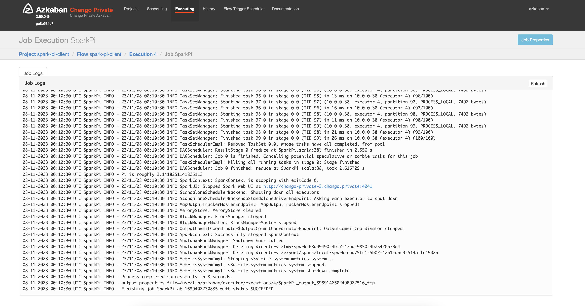
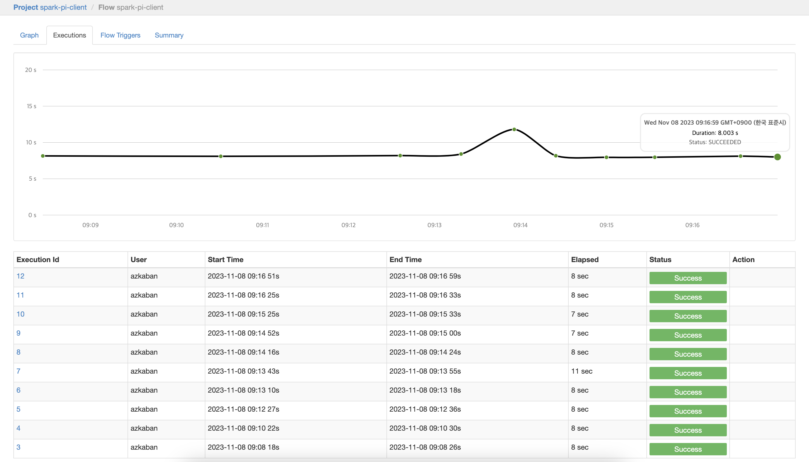

Run Spark Jobs with Azkaban
Azkaban is used as Workflow in Chango.
All the batch jobs like spark jobs and trino ETL jobs using dbt can be integrated with Azkaban in Chango.
This example shows how spark jobs can be integrated with Azkaban.
Run Spark Jobs on Spark Nodes
Let's run spark pi example job on spark nodes which can be either spark master or spark workers.
First, login as spark user.
Run Spark PI example job.
export JAVA_HOME=/usr/lib/jdk
export SPARK_VERSION=3.4.0
export SPARK_HOME=/usr/lib/spark
export SPARK_MASTER=spark://chango-private-1.chango.private:7777
spark-submit \
--master ${SPARK_MASTER} \
--deploy-mode client \
--name spark-pi \
--class org.apache.spark.examples.SparkPi \
--driver-memory 1g \
--executor-memory 1g \
--executor-cores 1 \
--num-executors 1 \
file://${SPARK_HOME}/examples/jars/spark-examples_2.12-${SPARK_VERSION}.jar 100;
Make sure the env value of
SPARK_MASTERis set correctly.
Run Sparks Jobs from Azkaban Executor Nodes
In order to integrate spark jobs with Azkaban, spark jobs must be run from Azkaban executor nodes via SSH.
Let's say, Azkaban executor nodes are chango-private-1.chango.private and chango-private-2.chango.private,
and Spark Node is chango-private-3.chango.private.
Password-less SSH Access to Spark Node from Azkaban Executor Nodes
To access Spark Node from Azkaban executor nodes via SSH, we need to configure as follows.
Copy ssh public key on all the azkaban executor nodes chango-private-1.chango.private and chango-private-2.chango.private
Paste ssh public key of Azkaban executor nodes to authorized_keys on spark node chango-private-3.chango.private.
Add permission on Spark Node chango-private-3.chango.private
Test if password-less ssh access to Spark node chango-private-3.chango.private from Azkaban executor nodes chango-private-1.chango.private and chango-private-2.chango.private.
Move to Azkaban executor nodes, and run the following.
Run Spark PI Example Remotely
Create spark job run shell file run-spark-pi-client.sh on Spark node chango-private-3.chango.private.
Login as spark user on Spark node.
Create file run-spark-pi-client.sh.
export JAVA_HOME=/usr/lib/jdk
export SPARK_VERSION=3.4.0
export SPARK_HOME=/usr/lib/spark
export SPARK_MASTER=spark://chango-private-1.chango.private:7777
spark-submit \
--master ${SPARK_MASTER} \
--deploy-mode client \
--name spark-pi \
--class org.apache.spark.examples.SparkPi \
--driver-memory 1g \
--executor-memory 1g \
--executor-cores 1 \
--num-executors 1 \
file://${SPARK_HOME}/examples/jars/spark-examples_2.12-${SPARK_VERSION}.jar 100;
Add permission.
On Azkaban executor nodes chango-private-1.chango.private and chango-private-2.chango.private, run spark job remotely.
The output looks like this.
client mode..
23/11/08 00:49:17 INFO SparkContext: Running Spark version 3.4.0
23/11/08 00:49:17 WARN NativeCodeLoader: Unable to load native-hadoop library for your platform... using builtin-java classes where applicable
23/11/08 00:49:17 INFO ResourceUtils: ==============================================================
23/11/08 00:49:17 INFO ResourceUtils: No custom resources configured for spark.driver.
23/11/08 00:49:17 INFO ResourceUtils: ==============================================================
23/11/08 00:49:17 INFO SparkContext: Submitted application: Spark Pi
23/11/08 00:49:17 INFO ResourceProfile: Default ResourceProfile created, executor resources: Map(cores -> name: cores, amount: 1, script: , vendor: , memory -> name: memory, amount: 1024, script: , vendor: , offHeap -> name: offHeap, amount: 0, script: , vendor: ), task resources: Map(cpus -> name: cpus, amount: 1.0)
23/11/08 00:49:17 INFO ResourceProfile: Limiting resource is cpus at 1 tasks per executor
23/11/08 00:49:17 INFO ResourceProfileManager: Added ResourceProfile id: 0
23/11/08 00:49:17 INFO SecurityManager: Changing view acls to: spark
23/11/08 00:49:17 INFO SecurityManager: Changing modify acls to: spark
23/11/08 00:49:17 INFO SecurityManager: Changing view acls groups to:
23/11/08 00:49:17 INFO SecurityManager: Changing modify acls groups to:
23/11/08 00:49:17 INFO SecurityManager: SecurityManager: authentication disabled; ui acls disabled; users with view permissions: spark; groups with view permissions: EMPTY; users with modify permissions: spark; groups with modify permissions: EMPTY
23/11/08 00:49:18 INFO Utils: Successfully started service 'sparkDriver' on port 44612.
23/11/08 00:49:18 INFO SparkEnv: Registering MapOutputTracker
23/11/08 00:49:18 INFO SparkEnv: Registering BlockManagerMaster
23/11/08 00:49:18 INFO BlockManagerMasterEndpoint: Using org.apache.spark.storage.DefaultTopologyMapper for getting topology information
23/11/08 00:49:18 INFO BlockManagerMasterEndpoint: BlockManagerMasterEndpoint up
23/11/08 00:49:18 INFO SparkEnv: Registering BlockManagerMasterHeartbeat
23/11/08 00:49:18 INFO DiskBlockManager: Created local directory at /export/spark/local/blockmgr-f486810b-b6fc-4973-8c23-491e7c8f43c6
23/11/08 00:49:18 INFO MemoryStore: MemoryStore started with capacity 434.4 MiB
23/11/08 00:49:18 INFO SparkEnv: Registering OutputCommitCoordinator
23/11/08 00:49:18 INFO JettyUtils: Start Jetty 0.0.0.0:4040 for SparkUI
23/11/08 00:49:18 WARN Utils: Service 'SparkUI' could not bind on port 4040. Attempting port 4041.
23/11/08 00:49:18 INFO Utils: Successfully started service 'SparkUI' on port 4041.
23/11/08 00:49:18 INFO SparkContext: Added JAR file:///usr/lib/spark/examples/jars/spark-examples_2.12-3.4.0.jar at spark://chango-private-3.chango.private:44612/jars/spark-examples_2.12-3.4.0.jar with timestamp 1699404557683
23/11/08 00:49:18 INFO StandaloneAppClient$ClientEndpoint: Connecting to master spark://chango-private-1.chango.private:7777...
23/11/08 00:49:18 INFO TransportClientFactory: Successfully created connection to chango-private-1.chango.private/10.0.0.188:7777 after 26 ms (0 ms spent in bootstraps)
...
23/11/08 00:49:23 INFO TaskSchedulerImpl: Killing all running tasks in stage 0: Stage finished
23/11/08 00:49:23 INFO DAGScheduler: Job 0 finished: reduce at SparkPi.scala:38, took 2.565842 s
Pi is roughly 3.1414131141413115
23/11/08 00:49:23 INFO SparkContext: SparkContext is stopping with exitCode 0.
23/11/08 00:49:23 INFO SparkUI: Stopped Spark web UI at http://chango-private-3.chango.private:4041
23/11/08 00:49:23 INFO StandaloneSchedulerBackend: Shutting down all executors
23/11/08 00:49:23 INFO StandaloneSchedulerBackend$StandaloneDriverEndpoint: Asking each executor to shut down
23/11/08 00:49:23 INFO MapOutputTrackerMasterEndpoint: MapOutputTrackerMasterEndpoint stopped!
23/11/08 00:49:23 INFO MemoryStore: MemoryStore cleared
23/11/08 00:49:23 INFO BlockManager: BlockManager stopped
23/11/08 00:49:23 INFO BlockManagerMaster: BlockManagerMaster stopped
23/11/08 00:49:23 INFO OutputCommitCoordinator$OutputCommitCoordinatorEndpoint: OutputCommitCoordinator stopped!
23/11/08 00:49:23 INFO SparkContext: Successfully stopped SparkContext
23/11/08 00:49:23 INFO ShutdownHookManager: Shutdown hook called
23/11/08 00:49:23 INFO ShutdownHookManager: Deleting directory /tmp/spark-c2184120-a77d-40f1-9dba-6b10c726697a
23/11/08 00:49:23 INFO ShutdownHookManager: Deleting directory /export/spark/local/spark-ae6bef98-6f06-48ca-8b9d-10c1a2cd2c87
23/11/08 00:49:23 INFO MetricsSystemImpl: Stopping s3a-file-system metrics system...
23/11/08 00:49:23 INFO MetricsSystemImpl: s3a-file-system metrics system stopped.
23/11/08 00:49:23 INFO MetricsSystemImpl: s3a-file-system metrics system shutdown complete.
Integrate Spark Jobs with Azkaban
There is a CLI tool for Azkaban to create and update azkaban project. We will use Azkaban CLI to create and update azkaban projects here.
Experience Sample Projects
Let's create azkaban sample projects.
Login as azkabancli user on Azkaban CLI node.
Download sample projects.
wget https://github.com/azkaban/azkaban/raw/master/az-examples/flow20-projects/basicFlow20Project.zip;
wget https://github.com/azkaban/azkaban/raw/master/az-examples/flow20-projects/embeddedFlow20Project.zip;
Create a project on Azkaban Web Server using Azkaban CLI. Enter password azkaban.
azkaban upload -c -p basicFlow20Project -u azkaban@http://chango-private-1.chango.private:28081 ./basicFlow20Project.zip;
After login with the default password azkaban for the user azkaban in Azkaban Web UI, you will see the following picture.

Execute the flow.

Let's create another sample project.
azkaban upload -c -p embeddedFlow20Project -u azkaban@http://chango-private-1.chango.private:28081 ./embeddedFlow20Project.zip;

Execute the flow.

Create Azkaban Project for Spark Job
Create flow file spark-pi-client.flow.
---
config:
failure.emails: admin@cloudchef-labs.com
nodes:
- name: Start
type: noop
- name: SparkPi
type: command
config:
command: ssh spark@chango-private-3.chango.private "/home/spark/run-spark-pi-client.sh"
dependsOn:
- Start
- name: End
type: noop
dependsOn:
- SparkPi
Create project file flow20.project.
Package as zip file.
Upload project file.
azkaban upload -c -p spark-pi-client -u azkaban@http://chango-private-1.chango.private:28081 ./spark-pi-client.zip
Now, you will see that the project for spark job has been created.

Execute spark project flow.


If spark job has been run in client mode, you will see the spark job logs like this.

You will see the execution history like this.
